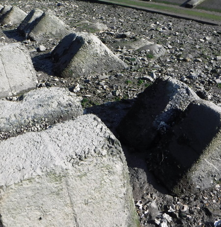
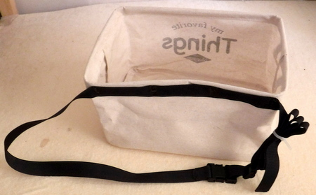
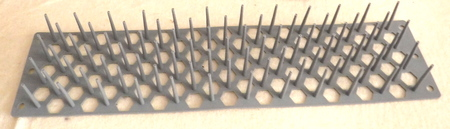
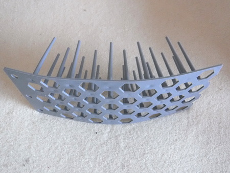
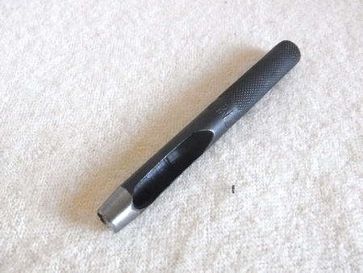
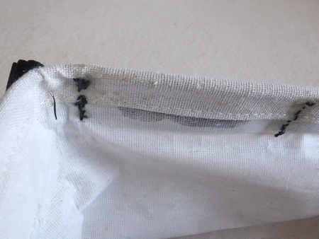
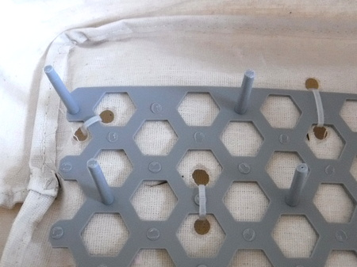
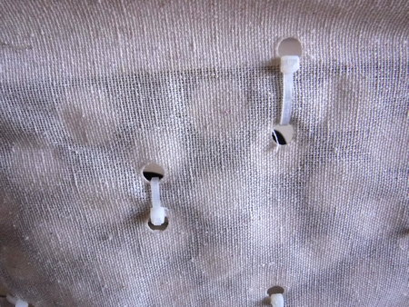
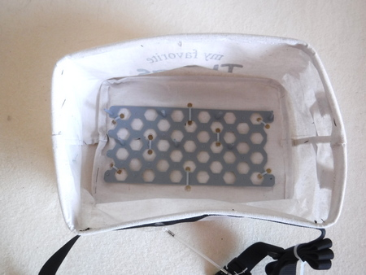

私のお気に入り
自作の道具たち フライライン・バスケット
2021/11/15
河口域でボラをフライフィッシングで狙うにあたり、下にフジツボなどが付いたギザギザの護岸ブロックが多数敷き詰められており、ラインを傷つけたくないなと思ってライン・バスケットを自作してみました。

ギザギザの護岸ブロック
昔持っていた、Ampuka 製のラインバスケット（底がメッシュのタイプ）は、昨年の引っ越しの時にオークションで売ってしまったので、格安で作ることを目指しました。
しかし、こうして記事を書いてみると、意外と予算をつぎ込んでしまったことに気づいて愕然としております。（泣）
製作にあたっては、「釣りニャんだろうさん」のブログ記事「３秒で出来る、あんまりダサくない自作ラインバスケット。」を読んで、いたく感動したので参考にさせていただきました。
材 料
- ストレージボックス 角型 Mサイズ 28*20*16cm 200円
（作例ではダイソーの商品を使用）
バスケットのサイズに関しては、作例のダイソー商品Mサイズだと、気持ち小さめですが、Lサイズはちょっと大きすぎた気がしましたので、店頭で確認してお好みで選んで下さい。

ストレージボックスにベルトを付けたところ - カラス鳥よけネット グレー色 100円 （同 上）


カラス鳥よけネット（ダイソー） - 取り外し可能タイバンド（極細）10本ほど（百円ショップの商品）
- ナイロンベルト 幅20mm 程度 自分のウェストサイズに合わせて 120cm ほど
- バックル ナイロンベルトに合わせて YKK製をお勧め（百円ショップの商品）
釣りにゃんだろうさんのように、ダイソーにて肩掛けベルト・ストラップの適当な商品でも作ることができると思います。腰に巻くか、肩から掛けるかは、お好みで決めて下さい。
工 具
- ポンチ（革細工に使う穴あけ工具）
穴の直径 5～7mm 程度 価格は800円ほど ホームセンターにて
ポンチ 径 7mm - 小型の金槌（ポンチを強く叩けるものならなんでもOK）
- カッターマット（無ければ適当な板でOK）
- カッターナイフ
- サインペン
- ニッパー（無ければカッターナイフで代用可能、百円ショップ）
- 太め・長めで丈夫な縫い針と、丈夫なナイロン手縫い糸 （百円ショップ）
製作方法
- ストレージボックスの取っ手を切り落とします。
※肩掛けベルト・ストラップを使う場合にはそのままにしておいてください。 - 自分のウェストサイズに合わせ、少々余裕を持たせてナイロンベルトをカット。冬場は厚着をするのでウェストが太くなります。(笑)
使い勝手としては、腰の下の方にラインバスケットがあったほうが、リトリーブしたラインを入れやすいので、その点を考慮してベルトの長さを決めてカットしてください。
立ち込まずに釣るのなら、太ももに付けてもいいかもしれません。見栄えは変ですが...
ベルトの端部はライターで炙ってほつれ止めをします。 - ナイロンベルトをストレージボックス上端に縫い付ける

不細工な縫製で恥ずかしいです..... - ナイロンベルトにバックルを取り付ける
- ストレージボックスに収まるようにサイズを見計らって、カラス鳥よけネットをカット。作例では、長さ 14.5cm、幅11cm にしました。
素材は比較的柔らかいので、カッターナイフで楽に切ることができます。 - 鳥よけネットをストレージボックス底面に当て、固定用のタイバンドを通す穴の位置を決めます。８カ所程度止めればOK。サインペンで印を付けておきます。
- カッターマットの上にストレージボックスを置き、印を付けた位置に、ポンチで穴を開けます。位置を決めたら、金槌などでしっかり叩くときれいに穴が開きます。
ポンチが無ければ、千枚通しか、先の尖ったドライバーでも穴は開けられますが、思った通りの大きさの孔をきれいに開けるのは難しいです。これらの穴は、ラインバスケットからの排水穴も兼ねます。 - 買ったままの鳥よけネットには、ピン状の突起が多数あるので、適当に見はからって、余分なピンを根本からニッパー（カッターナイフ → 手を切らないように注意。）で切り落とします。
- 鳥よけネットを、極細タイバンドでストレージボックス底面に固定します。

極細タイバンドでストレージボックス底面に固定したところ
固定用のパーツが底面の裏側（ネットを付けない側）に来るようにします。そうしないと、フライラインに絡んだり、傷つく恐れがあります。

底面の裏側（ネットを付けない側） - 試用してみて、鳥よけネットのピンをカットして縮めます。作例では、2.5cm ほど縮めました。使ってみた印象では、ちょっと短い気がしましたので、よく試して考えてからカットして下さい。もっとも１枚の鳥よけネットからバスケット２個分は取れますが。
完成したフライラインバスケット

私のお気に入り 目次へ
サイトマップ
ホームへ
お問い合わせ